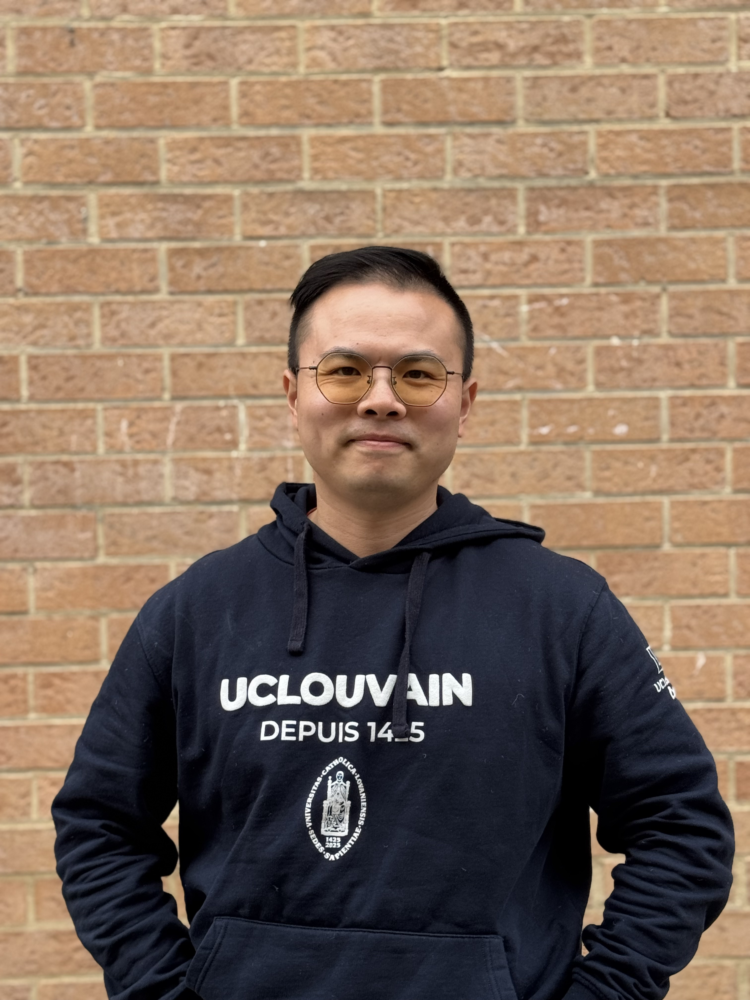

PhD Researcher in Linguistics | Taiwan Mandarin & French Syntax
I hold a joint PhD degree from National Chengchi University (Taiwan) and Université catholique de Louvain (Belgium). My primary research interests lie in the syntax of Mandarin and French, with additional interests in second language acquisition and historical linguistics. Alongside my research activities, I am also deeply engaged in French and Mandarin teaching and in ancient languages learning (e.g., Latin, Ancient Greek, and Hieroglyphs).
My current research focuses on corpus-based contrastive linguistics, with French and Taiwan Mandarin as the primary language pair. My doctoral dissertation, entitled A contrastive study of questions in Taiwan Mandarin and French: from theory to corpus analysis, investigates the question systems of the two languages on the basis of a self-compiled bidirectional parallel corpus of contemporary novels. The study examines question types and morphosyntactic structures through a bilingual comparable approach (comparing the two original languages), a bidirectional parallel approach (comparing original and translated texts in both translation directions), and a monolingual comparable approach (comparing non-translated and translated texts within the same language). Building on this work, my future research will explore the translation strategies employed by French translators of Taiwan Mandarin novels, with the aim of gaining a deeper understanding of cross-linguistic and cross-cultural mediation in literary translation.
You can download my CV below:
Download CVEmail: hung-hsin.hsu@uclouvain.be
Institution: Centre for English Corpus Linguistics, Institut de Language et Communication, Université catholique de Louvain.